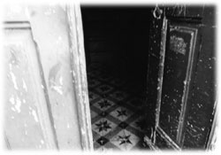

|
メキシコ中部を南北に貫くシェラマドレ山脈。この背の高い山々の連なりに、えくぼのようにささやかで清潔な盆地があった。
アンガンゲオである。
マルコたちの鳥の目飛行地図にも載っておらず、ほとんどのメキシコ人にとっても生涯縁がないであろうこのひっそりと澄んだ村はしかし、ガリア曰く、蝶の研究者たちにとっては世界一有名な場所なのだそうだ。この村から駆け上がるひとつの山の斜面が、モナーク蝶（和名：オオカバマダラ）の集団越冬地になっているからで、その貴重な場所は高度三千メートルを越え、見上げるばかりのモミの巨木で覆われているらしい。秋から冬にかけて、それら巨木の枝をしならせるほどに蝶たちは群がり、春がくれば再びカナダへ戻っていく。一群れ百万匹、総計五千万匹の大型の蝶が、アメリカ合衆国を越えて回帰するのだ。一介の調理師には想像もつかない自然のダイナミズムである。
流れは澄んだ向こう側の風から始まり
塵や蒸気や雲を押しやりながら
流れそのものの奔流となっていく
そこには何もないように見え
しかし手をかざしてみれば
指の間にまとわりつくかのように
遠い時代からやってきた磁力や
高い空から落ちてきたアルゴンや
地殻の遥か下から込み上げてくる熱意
ここではない どこかへ
それらの混然となった（しかし無色透明な）精気を
支流 支流 支流 支流 支流
そのひとつひとつから
奔流へ 一本の奔流へ たしかな芯へ
蝶の群れさえも押しやりながら
流れは澄んだ
あちら側への風へと受け継がれていく
（流れ／テオティワカンへの道）
みぞれ蜘蛛騒ぎがあった翌日の早朝、飛行船はアンガンゲオのはずれに到着した。陽はまだ昇っておらず、空は紺から藍色に変化している最中であった。オアハカからベラクルスへと流された後の様々な奮闘ぶりを考えれば、実にあっさりとした着陸であった。
マルコが飛行船の停泊場所に選んだのはモミの巨木が幾本も横たわっている緩やかな傾斜地で、そこには食卓に使えるほどの大きな切り株も多数あった。ブランコから飛び下りた不愉快な仲間たちは地面や切り株にペグを打つと、あっという間に飛行船を係留し、私たちが船から降りる用意をしてくれた。トーレの木の上空で命懸けで操縦席に飛び移った時とは大違い、縄梯子を使っての地面への安全な帰還である。ところがそこまでしてくれたマルコたちは私たちを降ろすと、森をしばらく散策しただけで再び飛行の準備に取りかかったのである。彼らがタフであることは充分に知っていたが、まさかそのまま南部に向けて帰るつもりだったとは思ってもいなかった。
「マルコ、少し休んだ方がいい。いくら何でもこれからすぐにオアハカまで帰るのは無茶だよ。ほとんど寝ずにここまでやってきたのだから」
私は不愉快な仲間たちの疲労度を考えてそう提案したのだが、マルコはゴーグルを額までずり上げると、張りのあるテノール声で高々と笑いだし、いとも簡単にそれを拒否してしまった。蜘蛛まみれでのたうちまわっていたマルコとはまるで別人である。すっかり粋な男に戻っている。
「死者の日までにオアハカに戻らないといかんだらあ。メキシコ最大の祭りだらあよ。酔っ払いが何をするかわからん時に、火消し屋が持ち場を離れとるわけにはいかん」
不愉快な仲間たちにも異論はないようであった。サルサがうまかっただらあ、と彼らは私に握手を求め、蜘蛛を手なづけたのは驚いただらあ、とガリアの球面の肩を叩いた。ブランコのロープにくくりつけられていたコーヒー豆の袋も私の手に戻り、マルコはついでにボーリングのボール状のものもひとつ投げてよこした。本物のボーリングのボールほど重くはないが、それなりにずしりとくる、石炭のような黒い塊である。
「御乗船記念に火消し爆弾をひとつプレゼントするだらあ。そりゃ、図に描かんでも、パパントラ鳥の糞とチアパスの火消し七草を固めて作ったものだらあよ。火に放りこめば爆発して、図に描くとすりゃあ、一気に窒素をまき散らすだらあ。たいていのボヤなら一発で消えるだらあ。まあ、その代わり、あたりは粉々になるだらあが。導火線の付いた安全タイプを進呈するだらあ。こいつは火をつけてから十秒もすれば爆発するだらあ。厚さ二センチの鉄板でも貫通する威力だらあ」
「いや、ちょっと、そんな物騒なものは・・・」
いきなり両手で抱えることになった火消し爆弾に目を奪われながらも、私はその爆発劇を想像していた。ボヤを消すためにあたりが粉々になってしまう消火活動。それは果たして住人に喜ばれることなのだろうか。
しかしその一瞬に係留用のロープが巻き上げられていた。不愉快な男たちはすでにプロペラ自転車のサドルに跨がっている。音もなく飛行船が地面を離れる。
「マルコ、火消し爆弾なんて私たちが持っていても」
「持ってて損はないだらあ、いつかきっと役に立つだらあよ。したらば、もう会うこともないだらあが、その真ん丸な少年も元気でな。達者で暮らすだらあ」
「マルコ、ありがとう」
私の横でガリアも腕を振っていた。ポケットからはボラボラが顔を出し、マルセロの背中ではイスラが後ろ足で立ち上がっていた。
「何ごとも恐れるに足りんだらあ。恐れさえなければ、何でもできるだらあよ」
「マルコ、本当にありがとう！」
飛行船はどんどん上昇していく。じきに陽が昇る明るい藍色の空に、とてつもなく大きなジャガイモが浮かんでいくようだ。
「いい男たちじゃったのう」
珍しくボラボラが褒め言葉を吐いた。
「まあね。でも、アタシは放っておかれたからさ、ずっと凍えてたよ」
普段の声に戻りつつあるイスラはちょっぴり拗ねているようだ。
飛行船の操縦室の右側で、二人の不愉快な男たちがペダルを漕ぎ出したのが見えた。右側のプロペラだけがゆっくりと回っている。百八十度旋回して、そのまま南部の州を目指すつもりなのだろう。飛行船は風に流されながら回転し始めた。男たちはサドルの上で奮闘しつつ、それでもまだ手を振ってくる。私たちも手を振り返す。
「何だか哀しい。ボクはもうきっと、あの人たちと二度と会うことがないと思うんです。いつもそうだ。こんなことの連続がボクの生きている日々です」
マルコたちとの不意の別れに、父親を思い出させるような要素があったのだろうか。ガリアが真ん丸な身体に似つかわしくないことを言いだし、みんなに聞こえるような溜め息を漏らしてみせた。
「さよう。エテ公もワシらネズミ族も、生きるということは別離の連続じゃて。それがわかっておるなら、せめて言葉を交わせる時には言葉を、それが無理でも微笑みぐらいは交わすべきじゃのう。ワシらはいずれ、あっという間に消えてしまうのじゃからのう」
飛行船は藍色を背景にしたじゃがいも型シルエットへと変わっていく。ペダルやプロペラの音はもう聞こえず、伝令管に向かって何やら叫んでいるマルコの声だけが途切れ途切れに降ってくる。
「そう。それで思い出しました。ボラボラ、あなたは死者の日にテオティワカンにいなければいけないのですね。いったいどういうことです？」
「むろん、現地に赴けばわかることじゃ。タカハシのせがれよ、お前さんも当然行くべきじゃ」
小さくなっていく飛行船のシルエット、その上部が朱色に輝き始めた。きっとマルコたちからは山の向こうの日の出が見えるのだろう。
「私は最初からそのつもりですよ。でも、理由がわかりません。せめて理由だけでも教えてもらえませんかねえ」
「理由などどうでも良い。起きてしまうことは起きてしまうのじゃからのう。はっきりしておることは、もしかして、急いでおるということだけじゃよ。死者の日までは今日を入れても三日しかない。その三日間でワシらは憂鬱の砂嵐の正体を突き止め、トウガラシが第二の宝であることを証明し、第三、第四の宝を探し出し、砂嵐の息の根を止めるんじゃ」
「マルセロ知ってる。しかもその前に、ガリアを助けなければならない。地面に落ちた蝶たちを再び飛ばせるように、ガリアを助けなければならない」
「死者の日にテオティワカンにおらんと、すべてが水泡に帰してしまうわい」
「水泡に帰すって、どういうことですか？ そんなこと、たったの三日でどうやってやるんですか？」
言っても仕方がないことであろうが、私の口からはやはり苛立ちが出てしまう。
「文句を垂れておる間に歩き出すことじゃ。恐れをなくせとマルコも言っておろうが」
「それはたしかにそうですが・・・」
「あ、マルコたち、気流に乗ったね」
イスラが一音も二音も高い声で私たちの注意を引き付けた。数百メートル上空まで浮かび上がった飛行船がかなりの速度で南に進んでいく。山陰から射す太陽の光を受けて朱色がいっそう鮮やかだ。
「さあ、ガリアや。それでは案内してもらおうかのう。モナーク蝶の越冬地はどこかのう？」
「越冬地は保護区になっているため、こんなふうに木の伐採が許されるわけないんです。ボクが思うに、ここは越冬地とは反対側の山の斜面かもしれません。いずれにしろ一度山を降りて、アンガンゲオの研究施設に来てもらうことになります」
「ボラボラやイスラはともかく、そこにマルセロが行っても大丈夫なのかい？」
「大丈夫も何も、研究員はボクと同じ能力を持った者ばかりですよ」
ガリアはそう言って、今にも転がりそうになりながら斜面を伝い降りていった。
ハードな一日がまた始まったのだ。しかもボラボラのせいで時間は限られている。のんびりとしている余裕はない。
飛行船はもうかなりの距離を稼いでいて、シェラマドラ山脈の別の尾根の上にあった。陽光に染まった朱色は銀色の点に変わり、まるで消えていく夜に取り残された明けの明星のようにぽつんと輝いていた。私は心の底で、マルコたちが無事にオアハカまで戻ることを祈った。
蝶の研究所は、アンガンゲオの村はずれから斜面に作られた道を少し登ったところにあった。周囲はやはりモミの林である。その鬱蒼とした木立の中に、コンクリート壁をむきだしにした円形の平家建てが、半ば枯れ草に埋まるようにして戸口を開けていた。まるで戦場のトーチカのように愛想がなく、どこかの田舎銀行の両替所のように無機質な建物である。火消し屋マルコなら、こんな場所に建てるにしては図に描いたような不自然な建物だらあ、とでも言いだしそうな雰囲気である。建物の質感が森と反発し合っているように見えたからだ。設計者が森に対してあまり愛情を持っていないように感じられたのだ。
建物の周囲には、養蜂用の蜜蜂の飼育箱が幾つか転がっていた。箱の上には忙しく旋回する数十匹の蜂たちがいる。この研究所は養蜂もするのだろうか。
「ガリア。蝶だけじゃなくて、蜂も研究しているのかい？」
「いいえ。これはトウガラシが苦手な研究員の自活用だったんですよ。トルティーヤやチーズに塗って食べるんです。でも、おかしいなあ。人の気配がしない。みんな、どこに行ってしまったのだろう」
「そうかのう。ありゃ、なんじゃい。一人やって来たみたいじゃよ」
ポケットから顔を出したボラボラが顎を差し出した方を見て、私はあまりのことに蒸気が抜けるような声を出してしまった。
研究所の裏の斜面から、ガリアとまったく同じ体型をした男が降りてきたのだ。手に蜂の飼育箱を抱えているため少し中腰になっているものの、ガリアよりはずっと大きい。つまりガリアよりも迫力のある球体が、蜜蜂から身を守る防御用の網を被って現れたのである。網越しに見える顔はガリアとそう変わらない。人間の顔はあまりにも引き延ばされてしまうと個性を失うらしい。彼は私たちを見つけると慌てて箱を地面に置き、転がるようにして近付いてきた。その表情も歩み寄りかたもすべてガリアと酷似しているのだった。
「ガリア・・・戻ってきたんですね。戻ってくることを期待していたから、つまりワタクシとしては、良かった、良かった」
「ポーリョ。みんなはどうしたの？」
「みんなって？ そういう漠然とした言い方は苦手ですなあ」
「だから他の研究員たちだよ。チノやミゲールやホーゼスや・・・」
「そういう意味でのみんなは、昨日までにみんなやめましたよ。どうせガリアだって帰ってこないんだって言ってね」
「嘘だろう！ じゃあ、ここにいるのはもうポーリョだけなのかい？ それじゃあもう、本当に終わりじゃないか。なんだよ、みんな、ボクのことを信用してくれなかったのか」
「そうじゃないですよ、ガリア。もう本当に終わりじゃないか？ そうではなく、もう本当に終わっているんです。どのみちアテ博士亡き後はやりようがないんですから」
「そんな。それじゃあボクは何のためにこうやって戻ってきたんだ。ああ、もう・・・ごめんなさい、タカハシさん。まさかこんなことになっているとは」
「いや、それは君の責任じゃないから」
「でも、そんなにみんな諦めが早いなんて」
ガリアの顔が苦しそうに歪んだ。網を被った球形男の大が球形男の小であるガリアの手を握りしめる。
「だからワタクシは嬉しいですよ、ガリア。あなたが戻ってきてくれて少なくともワタクシは嬉しいです。それでガリア、この人は？ マヤ人ですか？ あの黄緑の大きなネズミはサイズから断定すると、その、なんだ、ヌートリアに色でも着けたのですか？」
笑う気にも怒る気にもならない。どうやら私は本当にマヤ人に見えるらしい。
「違うんだ。この人とネズミたちはモナーク蝶を助けるために、わざわざオアハカの村からやって来てくれたんだよ」
「御丁寧にベラクルスまで寄ってのう、もしかして」
ボラボラが口を挟むと、球形男の大は急に顔から網を取り去った。かなり怪訝な表情になっている。個性がないとはいえ、一瞬緊迫したことぐらいは私にも読み取れた。
「ガリア。ワタクシ、どういうわけか、翻訳機を通さずにそのネズミが言っていることがわかりました。なぜならば耳から直接聞こえたからです。昆虫以外でこんなことは初めてです」
「ボクにもわかるんだ。紹介するよ、ポーリョ。そのネズミは世界でもっとも博識のある学士ボラボラ。そこの黄緑の大きいのが勇敢なマルセロ。そしてマルセロの背中に乗っている白くて綺麗なのがイスラだ」
「ネズミに挨拶するのは、ワタクシとしては、極めて珍しい体験ですなあ」
球形男の大は言葉が大仰な割に人が良いらしく、ネズミたちに向かって丁寧に手を差し伸べた。握手でもするつもりだったのだろう。しかし当然のことながらネズミたちには握手は不可能である。彼はそれを知って、頬をぽっと赤らめた。
「ポーリョ。そしてこちらの人がタカハシさんだ。マヤ人じゃない。日本人の調理師なんだ」
「日本人だって？ どこからどう見ても南部からやって来たマヤ人じゃないですか。民族的な部類としては激辛のトウガラシを食べそうな」
「ポーリョ、失礼だよ」
たしかにこの大柄な球形男のポーリョはずけずけとものを言う性格であるらしかった。しかしこちらはだてに厨房で歳を重ねてきたわけではないのだ。しつこくマヤ人と言われたところで、その程度のことでは胸の中にさざ波も立ちやしない。
「初めまして。調理師のタカハシです。蝶のことはよくわからないのですが、よろしくお願いします」
ポーリョという名の球形男はまじまじと私の目鼻立ちを観察しながら手を握ってくる。
「こちらこそ、よろしく。でも、ワタクシ、ちょっと疑問があるんですが、蝶のことはよくわからない外国人のタカハシさんがどうやって総計五千万匹の落下した蝶を助けるのですか？」
「それはまあ、私も疑問ですが・・・とりあえず、来てみたということですよ」
ふてぶてしいと思いながらもそんなふうにしか答えられない。何らかの道理があってここまでやって来たわけではないのだ。私を動かしているもの、それは目には見えないひとつの流れである。だが、それは理路整然と説明できるような力ではないのだから、言葉を並べようとすればどうしても空疎なものになってしまう。
「アテ博士だって解明できなかった蝶の集団落下を、まったくの素人とネズミたちが謎解きしようというのですか？ ガリアが戻ってきてくれたことに関してはワタクシ、たいへん喜びを覚えるのですが、この件に関してはどうも賛成しかねますね。まあ、何がどうなったところで何がどうなるってわけではないのだから、何をどうしてもらっても、別に何がどうなるってことじゃないのですが」
くくくっ、とイスラが小声で笑っている。このでっかい丸男、自分で何を言っているのかわかっているのかねえ。くくくっ。
「ごめんなさい、タカハシさん。ポーリョは理屈屋なんだ。がんじがらめの理論屋で屁理屈ばかり言っている。変わり者なんだ」
「そう。変わり者なんです、ワタクシ。ずっと嫌われ者です。帰る場所すらありません」
表情ひとつ変えないまま、ポーリョは防御用の網をもう一度被り直した。そして地面から蜂の飼育箱を持ち上げ、斜面の下の方に向かって歩いて行ってしまった。私やボラボラたちはその球形の背中を黙って見送るだけである。
「アンリ・ファーブルといっしょじゃな」
「は？」
「ファーブル昆虫記のファーブルじゃよ。虫を研究するような男は、もしかしてみんな変わり者じゃよ。ファーブルは水棲昆虫を観察するために、朝から晩まで池の淵で同じポーズを取っているような男じゃった。虫の種類などいちいち気にせん当時の南フランスにはそんな男はおらなんだから、村人はみんな彼を狂人だと思っていたようじゃ。六十歳で昆虫記を書き出すまで、ファーブルは何者であるのかよく理解されず、偏執狂の学者として少年たちから石を投げられるような男じゃったんじゃよ。人間以外のものに心を砕き、虫や蝶と話をすれば、それはもう、心の狭い奴らから見れば迫害の対象じゃろう。のう、ガリア。お前さんも色々といじめられたと言っておったじゃろうが」
ガリアはボラボラの方を見ないで、小さく頷いた。迫害という言葉で彼の眉毛がぴくりと動いたように見えたのは、いじめの話題に関して私まで敏感になっているせいであろうか。
「とにかく、研究所の中に入ってください。そこでお茶でも飲みましょう」
そう促すガリアには、やはり話したくない種類の話があるようだった。私たちはそれ以上話を続けず、彼が案内するままにトーチカ、或いは両替所のような研究所の入り口をくぐったのだ。

研究所は山の斜面が盛り上がる方向に窓列がしつらえてあるため、充分な陽光を取り入れているとは言い難い建築設計であった。しかも外見と同じで、内部もいたって愛想がない。コンクリート壁から染み出すように陰鬱さが漂っている。
部屋の片隅には蝶や昆虫の飼育用のガラス槽が幾つも積み上げられており、その中にはかつて生物を育んでいたであろう痕跡のようなもの・・・それはオガクズであったり、落葉や腐葉土であったり、保温用のサーモメーターであったり、とにかくごちゃごちゃとした見栄えのよくないものが残されていて、腐った根のような匂いを発していた。マルセロの背中に乗っていたイスラが私のポケットに飛びこんできたぐらいだから、ネズミ族でさえも鼻を曲げるようなひどい臭気だったのである。
ガラス槽の横には標本類を収めた木箱が積まれていた。ぱっと見たところ、箱の中には蝶や甲虫類が所狭しと並んでいる。研究所に活気があった頃は、これらの標本が壁を飾っていたのだろう。でも現在では、私でも知っているルリアゲハの光沢のあるグリーンが、埃でもかぶったかのようにどす黒い緑になって沈んでいた。死斑のような嫌な色だった。きっと虫は二度死ぬのだ。一度目は捕らえられて標本になる時。そして二度目は、その標本を誰も見なくなる時である。その、何かを諦めた後で一気に腐敗が始まったような色はルリアゲハだけではなかった。積まれた標本昆虫たちはことごとく色を失っているように私には見えた。鑑賞の対象物ではなく、彼らはただの死骸になっているのだ。匂いはこの大量の死骸からも漏れていた。
「ガリア、窓を少し開けてくれないか。君はこの匂いが我慢できるのかい？」
「ボクもそう思っていたところです。ポーリョったら、いったい何をしていたのだろう」
ガリアが窓を開けたことで森林の朝の空気が流れこんできた。まったく質を違える冷涼である。それによって、研究室の中に澱んでいた無念の匂いみたいなものが少しずつ薄らぎ始めた。毒液を注射され、コルクボードに刺されて死んでいった虫たちの悲痛な反射であろうか。それともこの研究所を主催し、突然の蝶の大落下に苛まれて自ら命を断ったというアテ博士の悔しさであろうか。匂いが薄らぐにつれて、逆に私にはそれらの一端が研究室に懸命にしがみつこうとしているように思えてならなかった。
お湯を沸かしますから、というガリアの申し出を受け、私は研究所の真ん中に置かれた丸いテーブルについた。腰かけも円形である。何から何まで丸いのだ。ガリアは入り口の横に作られた炊事場のようなところで水道の蛇口をひねっている。
「たくさん標本があるんじゃのう、ガリアや」
「そうですね。一応、研究所でしたから。世界中からたくさんのお客さんが来ました」
「知っておるぞ。最近のアンガンゲオは知る人ぞ知る観光地じゃ。蝶の研究所をやっておれば多くの人間が訪れるじゃろう。壁は珍しい標本で埋めた方がそれらしく見えるじゃろうからな、もしかして。しかしのう、ガリアや」
蛇口からちょろちょろと水が流れる音が聞こえてきた。三千メートルも高度があるとさすがに水の出が悪いらしい。
「なんでしょう？」
「お前さん、虫や蝶の言葉がわかるんじゃろう。交信ができるんじゃろう。飛行船に巣を張り始めた勘違いのみぞれ蜘蛛の大群を、見事に説得しよったのはつい昨日のことじゃよ。小さな生物と交信のできるお前さんが、なして標本など作りよったかいのう？」
「ボクは虫を殺しませんよ」
「そりゃ、そうじゃろう。お前さんに虫は殺せん。すると、殺したのはアテ博士かい？」
さすがボラボラである。見ているところが違う。いつも何かを勘付いている。
「アテ博士も殺しません。そういう人ではなかったです」
「したらば、なんで標本がこんなにあるんじゃい？」
ガリアはちょろちょろとしか流れない水で薬缶を洗っているようだった。この分ではいつ薬缶に水が溜まり、いつそれが沸き出すのかわからない。しかし私はそんなことよりも
ボラボラとガリアの会話の方に気を取られていた。この研究所のどことなく不自然な気配が、二人の交わす言葉からより一層際立ってきたからである。
「そもそも標本など必要じゃったのかい？ お前さんら、死骸に興味あったのかい？」
「いや、それは・・・」
「のう、ガリア。ワシは別に焦っておるわけではないがのう、死者の日にはテオティワカンにおらんといかんのじゃ。このタカハシもじゃよ」
「待ってくださいよ、ボラボラ。私は本当にその理由を知らないのですから」
「理由を知れば人間は動揺するわい」
「どういうことですか？ なんですか、動揺するって」
いきなり私とボラボラの攻防になってしまった。だが、ボラボラは私を相手にしない。
「とにかくそういうことじゃからのう、そうのんびりとしているわけにもいかんのじゃ。そのためにはガリア、お前さんが色々正直にしゃべってくれんと、ワシらも困ってしまうんじゃ、もしかして。お前さんは賢いから何をしゃべって何をしゃべるべきでないのか、つまり何と言うんじゃろうな、どこかで感情をコントロールするようなところがあるからのう、言葉を選んでおるじゃろう。それをやめて、全部話してくれんかのう」
「はい、まあ・・・」
ガリアは乏しい水で薬缶を洗い続けている。
「お前さんたちが殺したのではないとするとじゃよ、この標本はどこからどうやってここにやってきたんじゃ？」
「それ、全部、買ったんです」
「買った？」
「買ったじゃと？」
私とボラボラの声が重なってしまった。
「それらの標本にはオキナワ産のヨナクニサンという巨大な蛾や、フィリピン産のアトラスオオカブトムシまでいます。それは虫の標本で有名なタイの業者から買い付けたものですよ。ボクらにはもともと死骸を飾って喜ぶような趣味はありません」
「じゃったら、誰の趣味じゃよ」
「誰の趣味でもありませんよ」
やっと薬缶を洗い終わったのだろうか。ガリアが炊事場でこちらに向き直った。彼の背後ではぽちゃぽちゃと情けない水音が続いている。
「誰の趣味でもないんです。ただ・・・ここは純粋な研究所じゃなかったんです。ある意味で観光施設というか。むしろその意味合いの方が強かった。アンガンゲオには外国人の泊まれるホテルが数件あるだけです。モナーク蝶の季節には海外からもたくさんのお客が来るのに、彼らをもてなしてやれる施設がまったくと言っていいほどなかったんです。だからアテ博士は、いえ、アテ博士を起用した人々は、研究よりも観光施設としてこの場所を経営していたのです」
「経営というのは・・・何だか研究所に似合わない言葉だね」
「ほほほっ。青いのう、タカハシのせがれ。研究所とはいえ、研究員には給料を払わんといかん。経営抜きでやっていける組織など世界のどこを探しても存在せんわ。仮に非営利のNPOであろうとな。お前さん四十半ばにもなってそんな簡単なことがわからんのか、もしかして。食い物のことばかり考えておるからじゃ」
まともに付き合っていると血圧が二百ぐらいまで上がりそうなハゲネズミである。やはり飛行船から事故に見せかけて落としてしまった方が良かったのではないだろうか。
「するとガリアよ。研究所と言うても、おそらくはこういうことかのう。例えばのう、台北の蛇料理街は、台湾総督府が貴重種の毒蛇を食することを禁じおってから、いっせいに看板を書き換えよったんじゃ。それまでの蛇のレストランがすべて蛇の研究所に変わってしまったんじゃよ。やっておることは同じでも、研究所に名前が変わったんじゃから、文句を言うなということじゃろうのう。お前さんところの研究所も、実はそういうことだったのかい、もしかして」
「そこまでひどいものではないと思います。ボクらはちゃんとモナーク蝶の調査を続けていましたし、アテ博士は正真正銘の蝶学者です。蝶の落下が始まった時もほとんど寝ないで研究を続けていました。でも、もともとなぜカナダから大群で押し寄せる五千万匹の蝶がこのアンガンゲオの一点を目指すのか、彼らのそのシステムがわかっていないのですから、蝶がなぜ落ちてしまったのか、その理由だってわからないのです」
「しかしお前さんは交信ができるんじゃろう。じゃったら、蝶たちに直接聞いてみればよかろう」
「それが・・・モナーク蝶の声というのが今回ばかりは実に不思議で・・・何と言えばいのか。その、動いていないんです。意識化の映像が止まったままなんです」
ぽちゃぽちゃと続いていた情けない音が四分の一拍子の連続になり、休符が入るようになり、そしてついに全休符になってしまった。途絶えてしまったのだ。ガリアは後ろを振り返り、あれ、おかしいなあ、と呟いている。
「ガリア、無理をしてお茶を入れることはないよ。水をもらえればそれで充分だから」
「そうだよ。もともとお茶なんてアタシたちは飲めないんだから」
黙って話を聞いていたイスラまで助け舟を出してきた。
「おかしいんですよ。今年になってから何もかもがおかしい。前まではこんな山間地でも水が自由に使えたんです。それなのに、最近はいつもこうです。水が出たり出なかったり、たとえ出たとしてもちょろちょろとしか流れない。蝶たちはみんな落ちてしまったし、博士は自殺しちゃうし、ボクの仲間もその後を追っちゃうし、それに、今言ったように、ボクの能力はほぼ失われてしまった。残ったのはこの奇妙な球形の身体ですよ。これだって今年になってからだ」
「お前さんが感情を抑えるようになったのもかい？」
「ボクは別に感情を抑えたりしていませんよ。こうやってやり場のない怒りを漏らしているじゃないですか」
これはガリアの反論が尤もだった。ボラボラはガリアに向かって何度も同じことを指摘していたが、彼が感情を抑えているようには私には見えなかった。
「ちょっと話を整理してもいいかい？ ガリア」
先が見えにくくなってきた会話を整頓するのは私の役目であろう。
「はい、タカハシさん」
「君は幼い時に父親を事故でなくした。しかしある時、肩にとまった蝶がまるで亡き父親のように囁きかけてきた。その言葉の通りに天井裏を探すと、父親が詩を書き溜めたノートが出てきた。そこには『テオティワカンへの道』と書かれていた。君はその日から、父親の声を求めて蝶を探すようになった」
「その通りです。そして蝶だけではなく、様々な虫の声も聞こえてくるようになったんです」
「マルセロ知ってる。それ、虫の知らせ」
「さよう、世界中で通じる数少ない慣用表現のひとつじゃ。お前さんたちが知っておるのか知っておらんのかワシにはわからんがのう、実に、アフリカでは・・・」
「ちょっと黙っててもらえますか？ 人が話している時に言葉を差し挟まないでもらいたい」
テーブルの上で寝そべっているボラボラに、ついに私は言ってしまった。
ボラボラは大きな目玉をぐりぐり動かしている。
「なんじゃい、タカハシのせがれ」
「いいから黙っていて下さい。それで・・・ガリア、君は蝶を通じて父親と話ができたり、他の虫からアステカ時代の生け贄の犠牲者の声を聞いたりしたことを、家族のみならず学校やソカロでもしゃべってしまったんだね。そこから、いじめが始まった」
「そう、そうです」
「仲間はずれかい？」
「そういうのもあったし。母さんがせっかく買ってくれたノートや本にひどいいたずら書きをされたこともありました。嘘つきって書いてあって。それでボクはその本の表紙を破り捨てたんだけれど、次の日にはまたすべてのページに嘘つきって書いてあって。母さんはそれを見て、ひどく怒りました。嘘をついたお前がいけないって」
「それから？」
「石を投げられたり、髪の毛にマッチで火をつけられたり」
「そんなことを？」
「誰だい、アタシが行って噛み付いてやろうかい？」
「マルセロ知ってる。マルセロも噛み付く」
ネズミたちの憤りの中で、蛇口の水が少し復活したようだった。ちょろちょろの乏しい音がまた聞こえだした。
「他にも色々なことがありました。ボクに何か悪いものが付いていると一部の連中が言い出して、それでみんなでボクを押さえ付けて、指の爪をはがしました」
「そりゃ、ひどいのう」
「それでもうボクはもうすっかり嫌になって、学校へ行かなくなりました」
「たしかにそれはひどい。それで、それが・・・一番悔しかったのかい？」
「・・・はい、まあ」
ガリアはまだ何か隠している。私はそう確信した。しかし今はそれを問い正す時ではない。
「それでここにやって来たのかい。この研究所が助手を求めていることをどうして知ったんだい？」
「蝶が囁いたんです。苦しい思いはほどほどにして、アンガンゲオに来てみろって。そうしたらボクをやとってくれるところがあるからって。トーレの村にいてもいいことなんか少しもなかったし、うちは貧乏で口減らしが必要だったし、それにボクは男の子だから、もう村を出て独立しようって思ったんです。それでバスを乗り継いでこのミチョアカン州までやってきて、アテ博士に直接やとってもらうように頼んだんです。アテ博士は最初、ボクがまだ就学年齢だからと断ったのですが、もう帰ることがないことを知ると、仕方がないと言ってやとってくれました。給料は本当にわずかばかりでしたが、寝泊まりできる小屋もあったし、それにここで働いている人たちはみんな変わり者で、その、何と言うかボクと同じ能力を持った人たちばかりだったので、生きていくことが辛くなかったから」
「同じ能力と言うと、それは交信の？」
「はい。アテ博士は国が選んだ研究所長でしたが、実はさきほどのポーリョもそうなんですが・・・ボクらはみんな虫たちとの交信によってここにやって来たものばかりなんです。だからその内に、アテ博士の研究目標も変わりました。なぜごく一部の人間が虫の言葉を聞くことができるのか。虫の知らせというぐらいですから、これは原始の頃よりあった人間の能力です。でも、今ではそんなことを言うと頭がおかしいと思われるぐらいに珍しい能力になってしまった。それはなぜか。哺乳類と人間の間である程度の意思の疎通が可能なように、本当はあらゆる生物が心を交わせるチャンネルがあるのかもしれない。そもそも心とは何なのだろう。それは本当に人間だけのものなのだろうか。小さな虫にそれがなければ、北米大陸を飛び越えてここまでやってくるモナーク蝶の行動をどう説明するのだろう。アテ博士はそんなことに思いを巡らせていたようです」
薬缶の水の音がまた止まってしまった。ガリアの言葉以外に聞こえてくるのは森林を抜けてくる風の清涼と、飼育箱の上を回っている蜜蜂の羽音である。
「つまり、ある意味で昆虫の研究を通り越え、超能力の研究にも等しいことをここでやっていたわけだね。ここで、アテ博士と、それから数人の交信者とで」
「はい。そういうことです。アテ博士はこの研究に命をかけていました。虫をどれだけ分類したところで、その生態をどれだけ詳しく調べたところで、その具体性にどれだけの意味があるのだろう。昆虫学はその次元を飛び越えて、彼らの心に迫るべきだと。そこから地球の過去と未来が見えなければいけないといつも言っていました」
「そういう話はわかる奴にはわかる。しかしわからん奴には笑止千万というところじゃろうな、もしかして」
まったくその通りだと思った。だが、ボラボラにはもう少し黙っていてもらいたい。私は今、ここの研究所で何が起きたのか、それを浮き彫りにしようとしている最中なのだ。
「アテ博士というのは、お幾つぐらいの方だったのかな？」
「博士はグアダラハラ自治大学の助教授を退官されて、ここにいらしたんです。たしか五十歳を越えたばかりだったと思います」
五十歳過ぎ・・・日本では男性がもっとも自殺に走りやすい年齢だ。
「研究一筋の方で、でも面倒見のいい、責任感の強い人でした」
責任感の強い人・・・やはり自殺しやすい典型的なタイプである。
「奥さんはもう数年前に病気で亡くなっていましたから、アテ博士は独身だったんです。自由に生きていってもいいはずの人だったんです。だけど・・・」
「だけど？」
「ミチョアカン州が決めた観光用の林道に反対運動をするようになって、それから争いごとに巻きこまれるようになりました」
「ほ、ほう」
テーブルの上でボラボラが座り直した。マルセロも大きな耳をばたばたと動かしている。
「蝶を研究する者にとってこのアンガンゲオは聖地にも等しい場所です。でも、モナーク蝶の集団越冬が色々な国で紹介されるようになって、このミチョアカン州に観光客がどっと押し寄せてくるようになりました。まるでエクアドルのガラパゴス諸島のように、アメリカやヨーロッパから、そして日本からもたくさんの人々がやってくるようになったんです。このあたりは一応保護区ということになっていて、木の伐採や蝶の最終は禁じられていますが、人は入り放題です。例えばガラパゴス諸島であれば島々の上陸者を上限五千人にしてそれ以上は入れないようにしています。しかしここにはそういった制限がないんです。毎年のように観光客は増えていく。でも制限する法律はない。だから勝手にどんどん入ってくる。森は荒れ放題です。でも州としては、いえ、国としてはたくさんの観光客に来てもらった方が経済的に潤いますから、このアンガンゲオの整備を始めました。ホテルの数を増やし、これまで道がなかったところに舗装道路を作ろうとする動きです。それに対して異を唱えたのがアテ博士でした。博士は州議会や村の有力者と真正面からぶつかりました。でも彼らは、アテ博士の意見を聞こうとしないばかりか、博士がやろうとしていることそのものを否定し始めたんです」
「どういうことで？」
「そもそも、研究施設は税金や有力者の寄付金によって成り立っています。それぐらいのものがないと観光客が納得しないからです。ガラパゴスのイザベラ島にゾウガメの研究所があるように、アンガンゲオにもモナーク蝶の研究施設が必要であろうと彼らは思ったわけです。だから彼らは研究所を作り、その所長に蝶学者のアテ博士を任命しました。つまりすべてを動かしてきたのは博士ではなく、彼らだという自負があったわけです。だから有力者や議員の怒りは凄まじかったです。雇われ所長の博士が、金を出す者の意思に背くとはいったいどういうことであるのか。ミチョアカン州の未来を考えていないのは実は博士の方ではないのか。そんなふうに博士はやりこめられ、彼らから吊るし上げられるようになりました。いけないことに、まさにその窮地に蝶の大落下が始まったのです。彼らは言いました。蝶の研究をしているアテ博士よ、そんなに博士が偉いのなら、蝶をもう一度飛ばしてみせよ。蝶が落下したままでは観光客も来なくなってしまう。さあ、飛ばしてみせよ。それができないならクビにするぞと」
薬缶に落ちる水がまた弱々しい音を立て始めた。こうして簡単に聞いているだけでも博士の立場はかなり辛い。もっともこうしたことは博士だけではなく、世界中の職場で起きていることだが。
「それで、博士は・・・」
「お話しした通り、実はなぜ百万匹単位の蝶が群れで飛び、総計五千万匹もこのアンガンゲオに集まるのか、その理由がまったくわかっていないのです。ですから落下した謎も解きようがありません。細かな生態は観察できても、その生態を動かす原初の動機や力がボクらにはわからないのです」
「するとあれじゃのう、村の有力者や議員が言っておることも、もしかしてまんざら間違いではないわい。税金や寄付金を使いながら蝶を飛ばせんのでは研究所の意味がないではないか。ワシはアテ博士には同情するがのう、しかしだからといって、博士が百パーセント正義だとは思わん」
私はボラボラにきつい視線を送ったが、このウメボシ頭はまったくもって意に介さずである。胸の中で何らかの発露があると、それを言葉に変えなければ気が済まない性格なのだ。きっと若い頃からそうだったのだろう。ネズミに限らず、そういう者はいる。
「そもそも百パーセントの正義などというものがこの世にあるわけもない。百も正義も言葉としてはいい加減なもんじゃよ。見ようによって幾らでも変わるわい」
「ボラボラ、今はガリアの話を聞きましょう」
目玉が飛び出すのではないかと思うほど私はボラボラを睨み付けた。ボラボラはハゲ頭にしわを寄せて嫌なものでも見るような表情で私を振り返る。
「なんじゃい、今日のタカハシのせがれは強いのう」
「そうですかねえ。とにかく今は大事な話の途中です。黙ってガリアの話を聞きましょうよ。それでガリア、博士はそれからどうしたんだい？」
「ボクらは連日、蝶の落下現場に行きました。ボクの観察担当地域は『羽の生えた蛇』と呼ばれる谷間なのですが」
「ちょっと待った。羽の生えた蛇だって？」
瞬間的に、あの銀色の蛇が頭の中に浮かんできた。ここしばらくは遭遇していなかったが、夢で済ませてしまうにはあまりに印象の強い、あの翼を持った巨大な蛇である。
「クェツアールコアトルの神ですよ。メキシコにはいたるところこの神を祀った場所があります。きっと、この谷間も遥か昔、インディヘナの人々が神に祈った場所なのでしょう」
「なんだい、そのクェツアールコアトルの神ってのは？」
「タカハシのせがれや、今はもしかして大事なところなのじゃから、ガリアの話を聞こうではないか」
私にとっては蝶よりも大事な話が出たところで、ボラボラに逆に差されてしまった。
「それはもちろんそうですが」
「お前さんが言ったんじゃからな。ワシに黙っておれと」
「それでアテ博士のことですが・・・いいですか、話しても。先にクェツアールコアトルの話をしましょうか」
ガリアもちょっと困った顔になり、私とボラボラの双方を見ている。
「いや、いいんだ。機会を見て教えてくれれば。それで君たちはどうしたんだい？」
やり過ごすにはあまりに残念な機会だが、『羽の生えた蛇』の話は次のチャンスを狙えばいい。今はとにかく、ガリアの言葉に集中しなければならない。
「虫を通じた死者たちとの交信とは違って、虫そのものには言葉がありませんから、交信は映像や意識下の音のやり取りになります。時には温度までが電波のようなウエーブになって伝わってきます。でも、落下したモナーク蝶と交信しようとすると、受け取れるのはひとつひとつの静止画で、映像のように動いているものがまったく見つからないのです。ボクらは一日の間にそれほど長く集中できるわけではありません。頑張り通して『羽の生えた蛇』に座りこんでいても、やってくるのは森林や太陽や花々の静止した像ばかりで、そこから命の息吹みたいなものが感じられないのです」
「アタシが思うに、蝶たちはもう全部死にかかっているんじゃないかい？」
イスラが頭をひねりながらぶつぶつ言い出した。
「死ぬ前にはさあ、何がどう見えるんだろうね。生きているのと死ぬのの境界ってのはさあ。ひょっとしたらそんなふうに何もかもが止まって見えるんじゃないかい」
「それはおもしろい意見じゃのう。もしかしてコンピュータがフリーズしたかのようになるわけじゃ」
「そうです。まさにそんな映像しかやってこないんです」
ガリアが話を続ける。
「でも、死んでいるわけじゃありません。仮死状態かもしれませんが、完全な死ではないんです。動物の冬眠だって、あれは仮死状態みたいなものですよね。だったら、まさに落下したモナーク蝶たちはそうなんです。身体も心も冬眠状態。だけど普段であれば、蝶は二、三日落下することがあっても必ず樹に這い上がってきます。全部が全部落下するなんてあり得ません。それにもうこんな状態がずっと続いているんです。雪のように降り積もっているわけですから、下敷きになっている蝶はもう死んでいるかもしれません」
「結局、アテ博士はどんな結論を出したんだい？」
「結論は出ませんでした。出しようがないです。ボクらは連日のように落下した蝶たちの群れに混じり、交信を試みました。その間に・・・村の有力者たちが議会にかけて、別の結論を出しました」
「なんと？」
研究所の入り口に突然丸い影ができた。蜜蜂の飼育箱を抱えていたポーリョとかいう男だ。防御用の網はもう被っていない。手に蜂蜜を入れた瓶を持っている。
「そこから先はワタクシが説明してもよろしいですし、もちろん話の腰を折らないためには、これまで通りガリアが進めてくれても構いませんです。つまり皆さんは、ガリアとワタクシの二人の語り手を得たわけですが、そのどちらに耳を傾けるかはみなさんの自由ということになりましょうな」
「やあ、ポーリョ。聞いていたのかい？」
「そうですね、ガリア。ワタクシはほれ、こうやって今朝の分の蜂蜜を取ってまいりまして、偶然みなさんの話を半分ぐらい聞いてしまったのだと思います。いや、正確に言うと七十五パーセントぐらいかな。もっと言うと、実はその、ほとんど聞いておりました。でも基本的にはワタクシの知っている話ばかりでございます。ここから先はガリアよりも年長者の私がお話ししましょう。村の有力者たちの結論ですが、それは、ええ、それは・・・当研究所の閉鎖です。アテ博士はクビ。ワタクシたち研究員も解散。なぜなら、彼らはこう判断したからです。アテ博士は税金や寄付金を使い、蝶の研究と見せ掛けて妖しい超能力の研究をしている。研究員たちは実は超能力の志願者で、体型もおかしい上にやっていることも非常に胡散臭い。ま、それでも蝶を救うことが可能であれば目をつぶろうが、大落下から救えないのだからこれはもう閉鎖するしかないであろう。新しい所長を迎え、新しい研究員を集め、もう一度最初からこの研究所をやり直させるのだ。このように決定なさったというわけです。ま、ワタクシどもとしましては色々と腹の立つ結論ではございましたが、社会一般から見れば至極まっとうな決断でございましょうな」
「そりゃ、そうじゃろう。社会一般というわけのわからぬ怪物はお前さんたちを許容するほど甘くはないからのう」
「そして、こちらでございます」
ポーリョは山積みされた標本の横にある鉄製の本箱から一枚の封筒を抜き取った。何の変哲もない茶色い封筒である。そこから同じ色の便箋が出てきた。
「ガリアや、年長者という理由だけでワタクシがこれを読むのではないですぞ。ワタクシの方がアテ博士と過ごした時間は長かったのです。どうかひとつそこを汲んでいただきたい」
ガリアは何も言わずに頷いた。
「それではワタクシ、読ませていただきます」
う、うん、と咳払いするポーリョ。
「敬愛する研究助手諸君へ。まさか私がこんな手紙を皆さんに残すことになるとは思ってもみなかった。しかし、我慢も限界を過ぎた。私はこの命を投じることによって、今この地で行われようとしていることに対していささかの抵抗を試みたいと願っている。諸君も御存じの通り、私はもはや所長ではない。その任を解かれたのだ。奴らはとても狡猾で、自治大学の方にも色々と悪い噂を送ったらしい。非科学的な趣味に税金を使った人間として大学への退路も断たれ、ついには職務不履行、業務上横領罪で起訴されることが濃厚になった。私はただ、永々と繰り返される蝶の渡りから、この地に秘められた意思とでも呼べるものを明確にしようとしていただけである。何もないわけはないのだ。何かがあるからこそ、はるばるカナダより五千万の命が渡ってくるのである。その解明にはどうしても諸君の交信能力が必要であった。だがそれは目に見えないものは信じることができない、その程度の奴らによって踏みにじられ、粉々に破壊されてしまった。私は逮捕された上、君たちも蹴散らかされるであろう。そして奴らにとって大変好ましい、森林を破壊しても何も言わないニセモノの学者がこのニセモノの研究所に居座るのだ。世の中とはこのようなものであろうか。私は今初めて、侵略者たちによって殲滅された我がインディヘナの怒りがわかるような気がしてきた。今このアンガンゲオから非常に大切なもの、言わば地球の意思に等しい何かが失われようとしている。だから蝶たちは落下してしまったのだ。
そうだ。私は昨夜、恐ろしい竜巻を見たのだ。こんなに険しい山岳地にしては珍しい竜巻だった。それはまるで憎悪の砂嵐でもあるかのように、黒々とした地獄の様相を方々に見せつけながら斜面を駆け降りていった。あんな幻を見るということはもはや天が私を見放した知らせであろう。私はその時に決意したのだ。死をもって、私たちが置かれた理解不可能な状況に抗議する。私は牢獄から逃げるのではない。これは私という人生の最後の、大切な大切な主張なのである。そして私は優しかった私の妻のもとへ行く。蝶たちは知っている。私が間違っていないことを。蝶たちはきっと、あの紺碧の山々の遥か上まで私を送ってくれることだろう」
読み終わったポーリョの顔は青ざめていた。ガリアは苦しそうに下を向いている。私とボラボラ、そしてマルセロは目が合った。私たちが引き付けられたのはもちろん、憎悪の砂嵐という言葉である。それは憂鬱の砂嵐に間違いない。
「なるほどのう。博士の立場にしてみれば耐え切れんことじゃったろう。ガリアよ、博士はどうやって死んだんじゃ？」
「博士は、そこで首を吊られました」
ガリアは標本箱の置かれているあたりをすっと指差した。
「標本を組んでいた鉄パイプがあったんです。そのパイプにロープをかけて。それで一応警察の検死があったんですが、遺体はここに戻されまして・・・静かな葬儀でした。悪い噂が立った人ですから、ボクら助手以外は誰も参列しなくて。その翌日、博士を実の父のように慕っていた助手が同じようにして死にました。二人とも村はずれの墓地に埋葬されています」
この研究所に入ってきた時に嗅いだひどい匂い。私にはその原因がわかるような気がしてきた。飼育材の残骸が腐りながら発する匂い。おびただしい標本昆虫の死骸に落ちていく匂い。そして博士と、その助手の恨みの匂いである。
ボラボラも同じことを考えていたらしい。
「アテ博士の言う通りじゃ。エテ公はできが悪いからのう。目に見えるものだけを信じおって、目に見えぬものは信じようとせん。すべての存在には命が宿っておって、そのそれぞれがいかに絡み合っておるかということを忘れておるのじゃ。ワシには蝶のことはよくわからんがのう、そりゃまあ、たしかにカナダあたりからここまで一直線に飛んで来るのじゃから、何らかの理由があるのじゃろう。蝶を引き付ける大きな磁気の流れがあるとかのう」
「磁気説というのはあまり聞いたことがありませんなあ」
ポーリョは遺書を封筒に仕舞いこみながらボラボラの言葉に応えている。
「例えばじゃよ。そういうこともあるかもしれん、ということじゃ。六千五百万年前の巨大隕石のクレーターは地表からは見ることができん。地震波の乱れと重力異常をコンピュータが解析できるようになって初めてそこに衝突跡があることが実証されたんじゃよ。その隕石がどれだけの災害を地球規模で起こしたか、それも地上には極めて少ないイリジウムの濃密層、つまりK-T階層が全世界的に科学的探査されるまで誰にもわからなんだ。しかしその、今となっては目に見えん大事件が実は本来の地球の主であったドラゴンたちを消滅させてしまいよったのじゃからのう、ワシらが気付いておらんだけで、今この一瞬のワシらのまわりの空気、その影に潜む何らかの力や流れに非常に大切なことが隠されておるかもしれんのじゃ、もしかして」
「ボラボラ、また難しい話かい？ アタシはまた眠くなってくるよ」
「だまらっしゃい！ 難しいことを避けて通るでない！」
ボラボラが珍しく牙をむきだして怒鳴り付けた。イスラはひえっ、と小さな悲鳴をあげてマルセロの背中に飛びつく。皮肉や憎まれ口だけは超一流のボラボラだが、あからさまに怒鳴り声を発するようなことはこれまでなかったので、これには私もたじろいだ。感情の噴出があまりに激しかったのだろうか、ボラボラは咳き込んでいる。
「あ、もうそろそろ、水が溜まったかもしれない。どうもここのところ、水道の調子がおかしくて」
場を取りなすようにガリアが立ち上がった。
「まったくもっておかしいですな。ワタクシも水にはほとほと弱っております。まさか村の有力者たちがワタクシたちをいじめるために水道管に細工をしているということはありますまいか」
ポーリョも炊事場の方に向かいながら、さも困ったという様子で両手を広げてみせた。
ボラボラはまだ咳き込んでいる。ハゲ部分が茹で上がったように赤さを増している。
「大丈夫ですか、ボラボラ？」
「大丈夫じゃ、ワシは大丈夫じゃ。それよりものう、その水道管はそりゃ、どこかに貯水地のある上水道かのう？ それとも山の天然水を利用したものかいのう？」
薬缶をコンロにかけながら、ガリアが答える。
「こんな斜面まで上水道は昇ってきませんよ。これはモナーク蝶の越冬地のはずれにある地下水層から直接汲み上げているものです。幅の厚い泥岩があって、その上を地下水が流れているんです。そこがこの地区の共通の水源になっています」
「水道管から水が流れてこんということは、もしかして地下水に異常が起きておるということではないのかい？」
「その件に関してはワタクシも心配しておりました。蝶の落下とも何らかの関係があるのではないかと」
「ワシも充分にそう思っておるわい」
「しかし、地下水の増減など季節によってそれはよくあることだとワタクシ解釈しております。それに広範な泥岩層をいったいどうやって調べろと。切削していくには大変な労力とお金が必要になりますですよ」
ポーリョは黄金色の蜂蜜が入った瓶を手の中で転がしながら、そこまでは研究者として自分も考えたのだと念を押している。
「たしかに病原菌は一度広まってしまえば、どこから手を付けるべきなのかわからんぐらいに全体が膿んでしまう。しかしのう、たいていの場合、菌の侵入口はたった一ケ所なんじゃよ。その一ケ所のためにすべてが狂いだす。さあ、ゆっくりとはしておられん。さっそく蝶の落下地点に行ってみようではないか、もしかして」
「でも今、お湯が沸きます」
ガリアが京ニンジンの口を無理矢理尖らせた。
「どうせ今夜の晩餐はタカハシのせがれがうまいものを作るじゃろう。それまでは乾いたトルティーヤに蜂蜜でも塗ってごまかすんじゃ。咽が乾くなら湧き水でも飲めばよい。さあ、行くぞ、もしかして」
どうして、と呟きながらガリアがコンロのスイッチを切った。仕方がないですな、とポーリョは蜂蜜の瓶を上着のポケットに押し込む。疲れていないと言えば嘘になったが、私も足腰に疼痛を覚えながら円形の椅子から立ち上がる。
「タカハシのせがれや。何が起きるかわからん。コーヒー豆の袋はしっかり持っていくんじゃぞ、もしかして」
「はいはい。野外調理になるかもしれませんからね」
こうして一匹の老ネズミに急かされる形で、通常の人間一人、球状の人間二人、黄緑と白いネズミが一匹ずつ、山の斜面を散策することになった。モナーク蝶の集団越冬地。正確に言うならば、モナーク蝶の集団落下地点を目指してである。
|